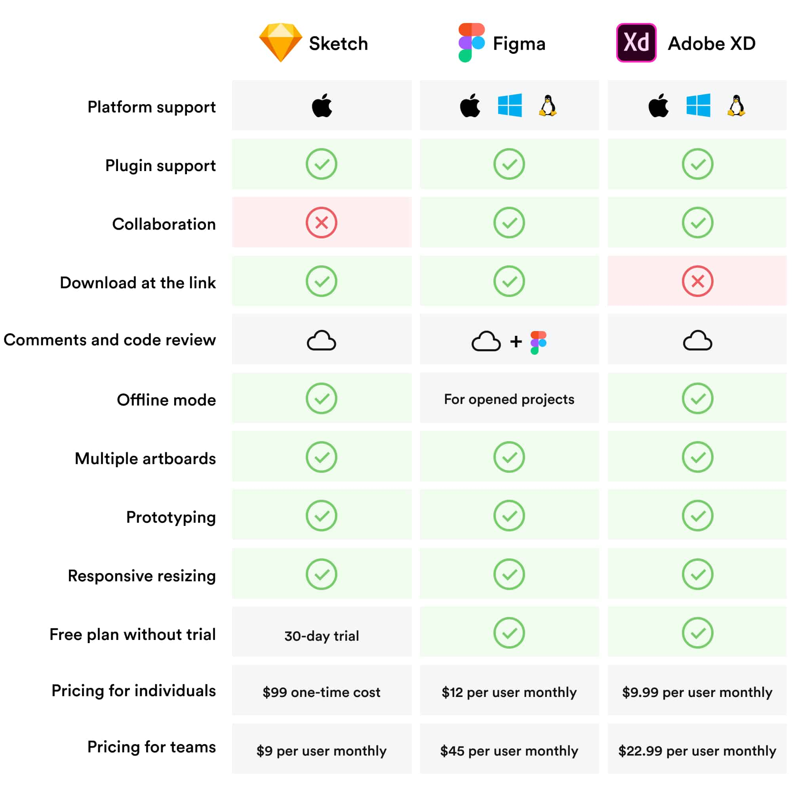

A Comprehensive Analysis of Leading Design Project Tools
Marc Urbealis ~ May 5th, 2023.
Intro
In the dynamic realm of digital design, the choice of project tools is a critical decision that directly influences the success of a creative endeavor. Among the myriad options available, Figma, Adobe XD, Sketch, InVision, and Visiliy have emerged as leaders, each offering a unique blend of features and capabilities. This essay aims to provide an exhaustive comparative analysis of these design project tools, exploring their pros and cons, industry applications, specific project use-cases, and prevailing preferences among companies and freelancers.
Figma: A Cloud-Based Collaborative Powerhouse
Figma has solidified its position as a frontrunner in the design project tool landscape, primarily due to its cloud-based nature and robust collaborative features. Real-time collaboration is the hallmark of Figma, allowing multiple designers to work concurrently, irrespective of geographical locations. This feature makes Figma an ideal choice for remote teams engaged in projects that demand continuous collaboration. The cloud-based platform ensures easy sharing and accessibility, facilitating a seamless design workflow. However, the learning curve for Figma may be steeper for users accustomed to traditional design tools.
Adobe XD: Integrative Design within the Creative Cloud Ecosystem
As part of the Adobe Creative Cloud suite, Adobe XD offers an integrative approach for designers familiar with the Adobe ecosystem. Its seamless integration with other Adobe products, such as Photoshop and Illustrator, provides a cohesive workflow for designers. Adobe XD is particularly well-suited for industries where visual design and rapid prototyping are pivotal, such as web and app development. The prototyping features of Adobe XD are robust, allowing for the creation of interactive and dynamic prototypes. However, the subscription-based pricing model may pose challenges for freelancers and small businesses.
Sketch: A Mac-Centric Design Tool for User Interface Excellence
Sketch has carved its niche in the design community, especially among Mac users, by offering a focused and intuitive user interface design experience. Renowned for its ease of use and powerful vector editing capabilities, Sketch is often the preferred choice for creating intricate user interfaces. Its extensive library of plugins enhances its functionality, allowing designers to tailor their workflows. However, Sketch's lack of native collaboration features may be a drawback for teams seeking real-time interaction on projects.
InVision: Prototyping and Collaboration for Seamless Design Processes
InVision excels in providing a platform for designers to create and share interactive prototypes seamlessly. Its robust prototyping and collaboration features make it a go-to choice for projects that require comprehensive feedback and iteration. InVision supports integrations with various design tools, enhancing its adaptability within diverse workflows. Despite its strengths in collaboration, some users may find InVision's interface less intuitive compared to newer tools in the market.
Visiliy: A Rising Star in User Interface Design
Visiliy, a relative newcomer in the design project tool arena, has gained attention for its focus on user interface design and collaboration. With an emphasis on creating pixel-perfect designs, Visiliy aims to streamline the design process and enhance collaboration between designers and developers. Its cloud-based platform enables real-time collaboration, and its robust design version control ensures consistency across iterations.
Industry Applications and Project Specifics
InVision excels in providing a platform for designers to create and share interactive prototypes seamlessly. Its robust prototyping and collaboration features make it a go-to choice for projects that require comprehensive feedback and iteration. InVision supports integrations with various design tools, enhancing its adaptability within diverse workflows. Despite its strengths in collaboration, some users may find InVision's interface less intuitive compared to newer tools in the market.
Company and Freelancer Preferences
The preferences between these design project tools among companies and freelancers depend on various factors, including the nature of projects, team collaboration requirements, and budget considerations. Larger companies with established design teams may lean towards Adobe XD due to its seamless integration with other Adobe products. Remote teams often favor Figma for its cloud-based collaboration, while those focused on user interface design may opt for Sketch. InVision's strengths in prototyping may be valued in projects where feedback and iteration are critical, and Visiliy's rise in popularity could attract those seeking a balance between design excellence and collaboration.
Conclusion
In conclusion, the choice of design project tools is a nuanced decision that hinges on the specific requirements of a project, the preferences of the design team, and the overarching goals of the organization. Figma, Adobe XD, Sketch, InVision, and Visiliy each bring their unique strengths to the table, catering to the diverse needs of the design community. As the design landscape continues to evolve, a thorough understanding of the intricacies of these tools becomes essential for designers, enabling them to make informed decisions that foster creativity, efficiency, and collaboration in the ever-changing field of digital design.